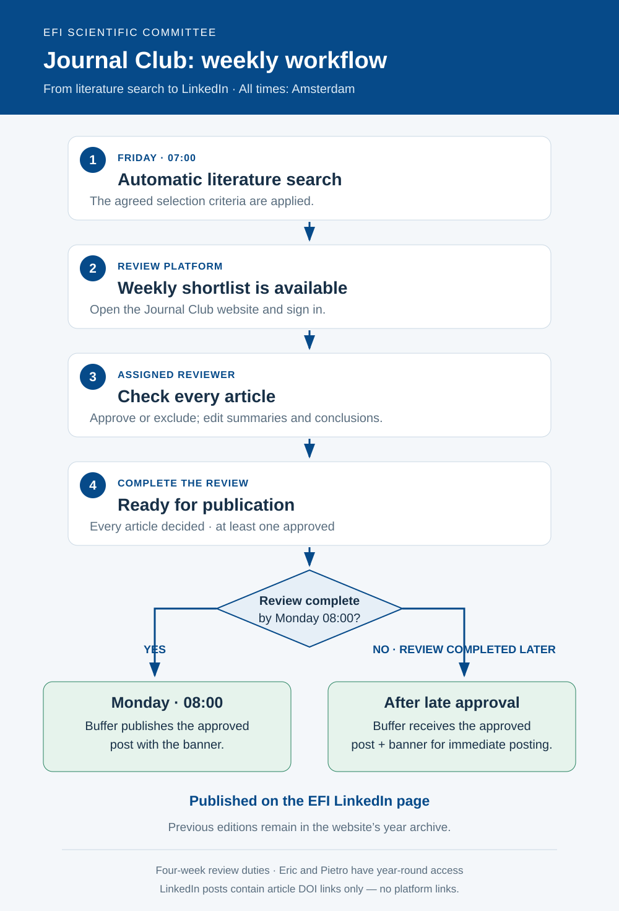

How the Journal Club works
A weekly search, a committee review and an approved LinkedIn post.



Access and review
Eric assigns review duties in four-week ISO-week blocks. Use your personal activation link to choose a password of at least 12 characters. The link can be used once and expires after seven days. Keep it private. Sign in with your email and password during your assigned duty period. Eric, as administrator, and Pietro have year-round access. Contact Eric for activation or a password reset.
Check each article, edit the text where needed and mark it as approved or excluded. Changes are saved centrally. Every article must have a decision and at least one must be approved before publication. Editing an article resets its approval to pending and returns a scheduled post to draft until the review is complete again.
Publication and archive
All times use Europe/Amsterdam, including summer and winter time. Buffer schedules the approved text and banner for Monday at 08:00 on the EFI LinkedIn page. If the review is completed after that deadline, it is submitted for immediate publication. Check the publication status and Buffer queue before posting manually to avoid duplicates.
Posts contain only DOI links to the articles, never links to GitHub or the review platform. Previous editions are available in the year archive, newest first. Please keep the platform link within the Scientific Committee; article drafts and archive pages are publicly accessible.